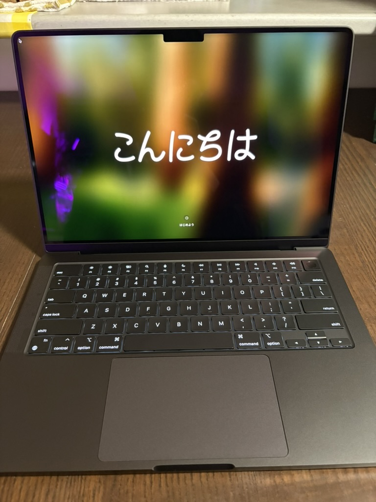

About My Work
Full-stack engineer with experience designing and building modern web applications using Next.js, TypeScript, and cloud technologies. Focused on scalability, maintainability, and delivering clean, user-centered solutions.
Committed to continuous learning and professional growth, I enjoy solving complex problems, improving systems, and contributing to products that make a real impact.